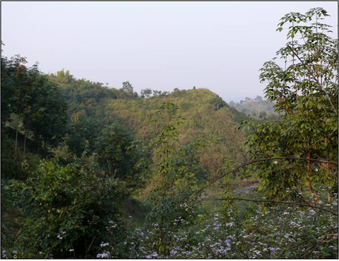

বৈচিত্র্যময় খাগড়াছড়ি
রহস্যময় প্রকৃতির আরেকটি সৃষ্টি হল হাতিমাথা আকৃতি পাহাড়। খাগড়াছড়ি জেলা সদরে পেরাছড়া নামক এলাকায় এই পাহাড়ের অবস্থান। ছোট ছোট কিছু পাহাড় পার হয়ে এই হাতি মাথা আকৃতি পাহাড়ে উঠতে হয় বাঁশের সিঁড়ি বেয়ে।

বাঁশের সিঁড়ি বেয়ে উঠতে উঠতে মনে হবে যেন হাতির শুঁড় বেয়ে উপরে উঠছেন। আর পাহাড়ে উঠলেন মানে যেন হাতির মাথায় উঠলেন। কিছুটা কাল্পনিক হলেও দূর থেকে এই পাহাড়ের আকৃতিটা হাতির মাথার মতই মনে হয়। পাহাড়ে উঠে গিরিখাদ দেখে কেউ কেউ ভয়ও পেতে পারেন, তবে এখানকার নয়নাভিরাম প্রাকৃতিক দৃশ্য সবার হৃদয় কাড়ে।